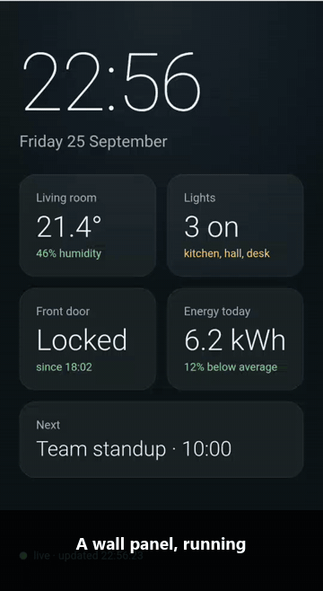

homeostat · experiment reports
A screen that heals itself
homeostat keeps an old Android phone working as an always-on screen: it notices when the screen breaks, fixes it with the least disruptive step, and checks that it really healed. These reports come from a real OnePlus 5T, 20 runs per scenario.
